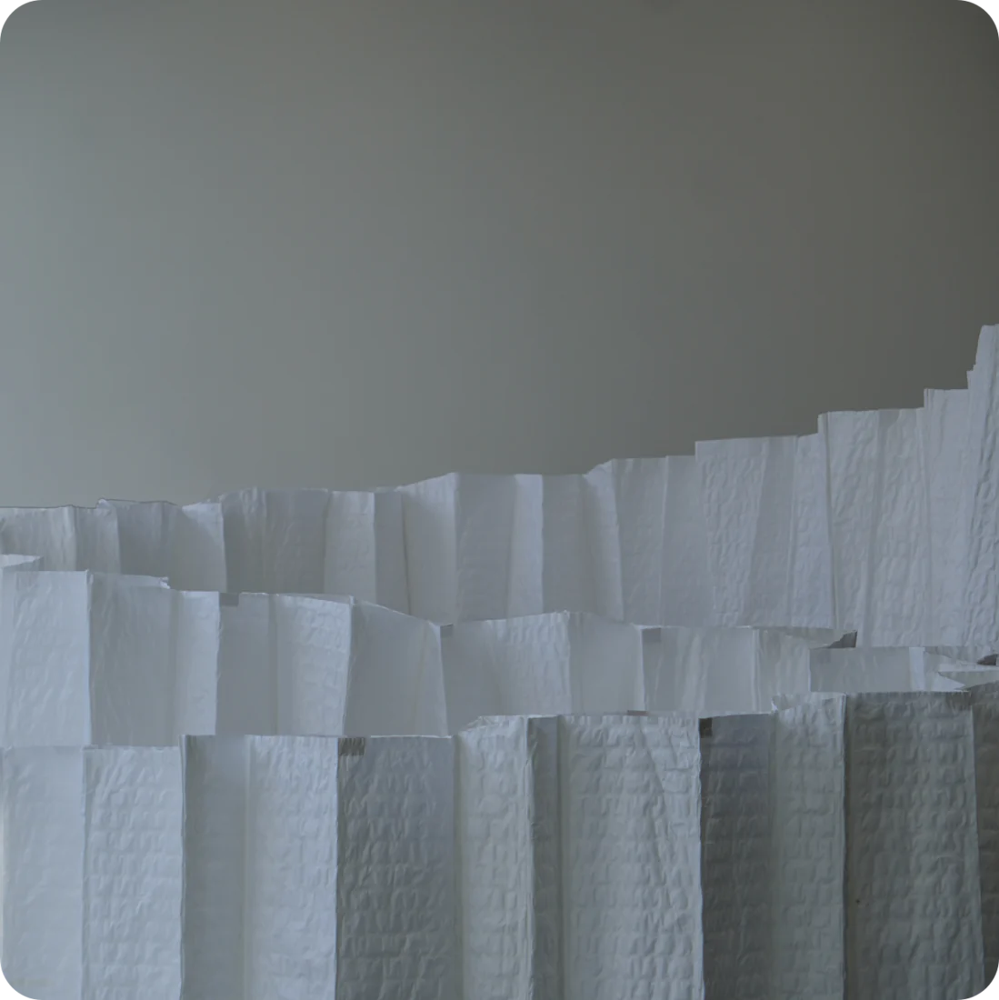
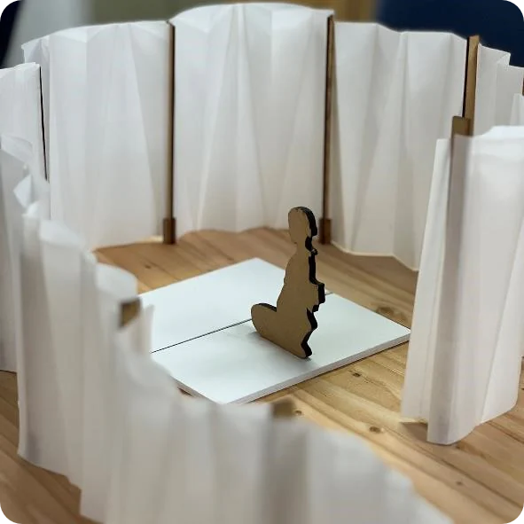
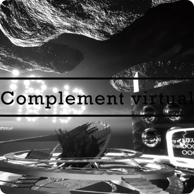
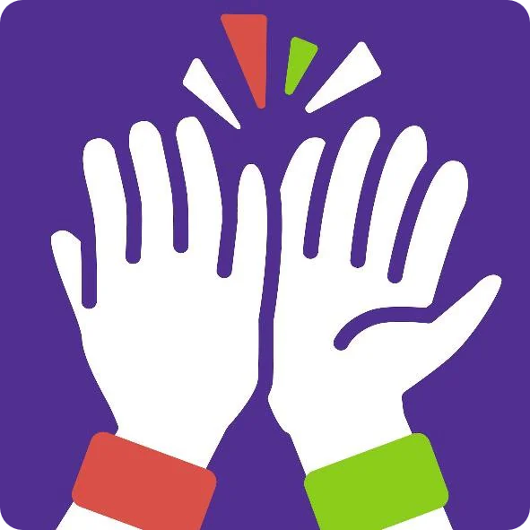
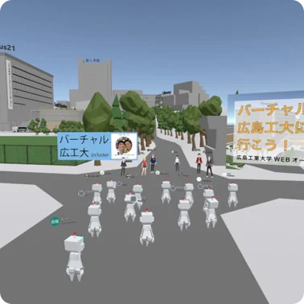
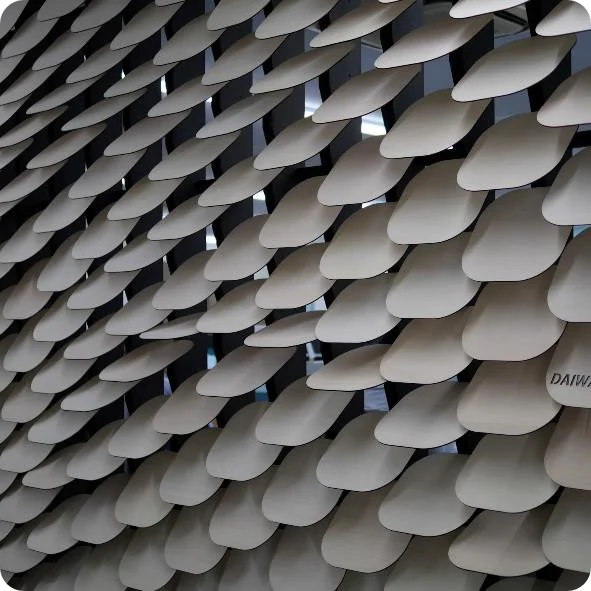
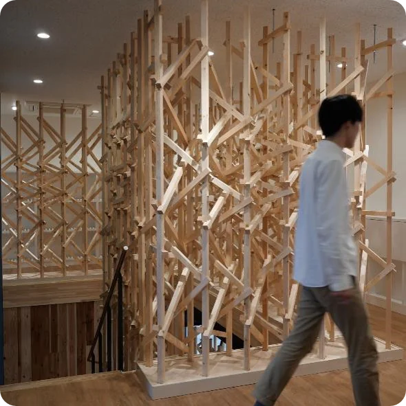
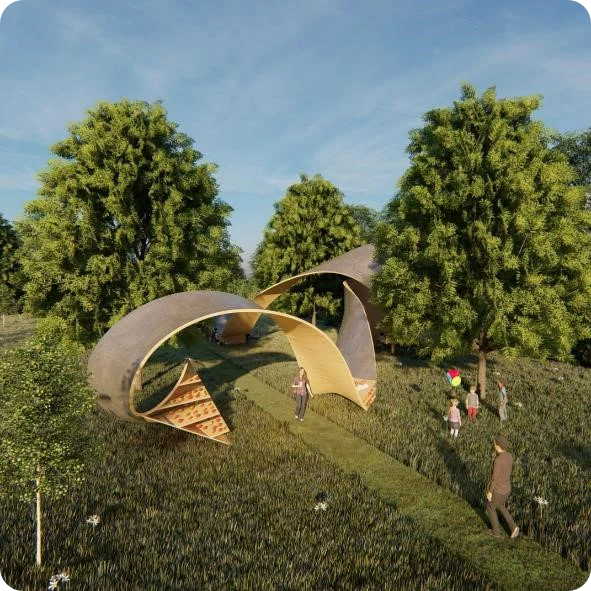
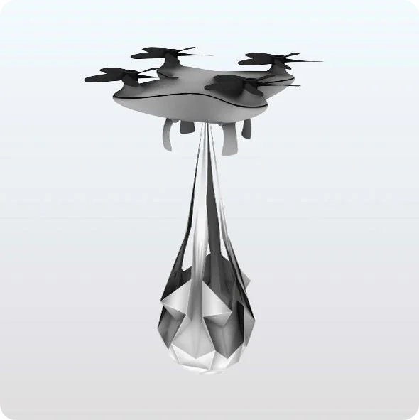
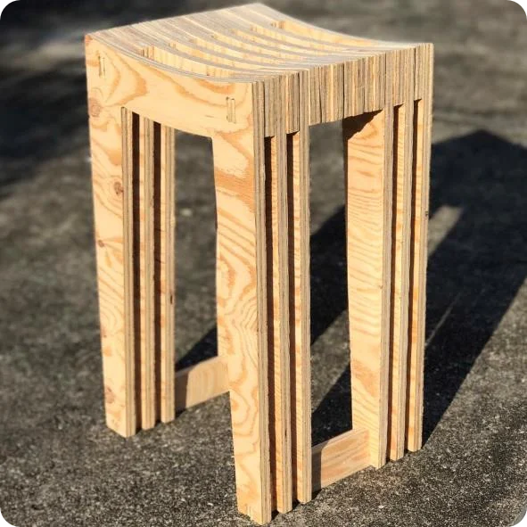

 2023.05 Origami Teahouse Transition Teahouseの提案をもとに、和紙と糊を使った可動式の茶室を制作。CNC加工で糊を置く位置を制御し、G7広島サミットの歓迎レセプションに展示した。
 2022.09 Transition Teahouse 折り方や高さの変化を通して、日常から非日常へと切り替わる可動式の茶室を提案した。ラフバラー大学との合同ワークショップで最優秀賞を受賞。
 2022.04 Complement Virtual VRでは歩いた方向の感じ方が変わることに着目。階段や分岐のある実空間と、それに対応する仮想空間を往復しながら、会場に向かう体験を提案した。
 2021.03 FUN LINE 離れた場所でも応援の熱量を共有できるオンライン観戦アプリを企画。約半年間のインターンで企画とUI/UXデザインを担当し、実装・実証実験まで携わった。
 2020.05 バーチャル広工大 キャンパスを訪れたことのない新入生に向け、Rhinoceros、Unity、clusterで約3週間かけてバーチャルキャンパスを制作。新入生ツアーから、約600人が参加するオープンキャンパスへと展開した。
 2020.05 大和ハウス広島支店設計部 エントランス 大和ハウスのシンボル「エンドレスハート」の濃淡を、薄い合板でつくった羽根の角度に変換。ロゴが浮かび上がるエントランスのパーテーションを制作した。
 2020.01 山根木材 福岡支店 木組みの密度を調整し、オフィスと店舗を緩やかに仕切るパーテーションを設計。実物大の試作を重ね、CNC加工から現場での組み立てまでつないだ。
 2019.09 Apple peal 敷地の3本の大木を起点に、リンゴの収穫から販売、調理までをつなぐ建築を提案。リンゴの皮をモチーフにした曲面の3Dモデリングとレンダリングを担当した。
 2019.01 Net Shopping for 2045 2045年のドローン配送を想定し、風呂敷と人工筋肉で形の異なる荷物を包んで運ぶ方法を提案。梱包材を減らすことを目指した。
 2017.07 Laminate Stool 850 × 850 mmの合板1枚から部材を切り出して積層する、座面高400 mmのスツール。材料の取り方とスツールの形を同時に検討した。